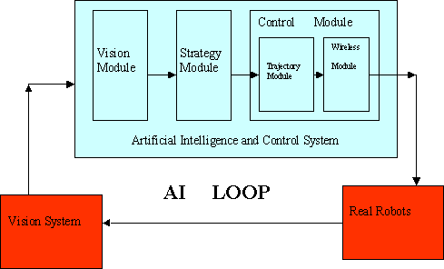
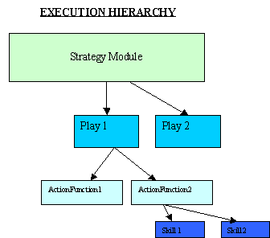

When the AI system is initialized, the following actions take place :-
1) Loading of parameters :- All the well-known constants used in the system are stored as parameters in a file named 'Robocup_Parameters.txt' and 'Robocup_2001_TrajectoryParams.txt'. These files can be found in the runtime folder. Additionally we have parameters for individual skills and plays that can be found under runtime\SkillParams and runtime\PlayParams. In this way we can change system characteristics without modifying the code and recompiling. Moreover, we do not have to wade through code to find these variables and change them.
2) Registration of Skills and Plays :- Skills are low-level human behavior exhibited by the robots like dribbling the ball, kicking the ball, moving around the ball. Plays use multiple underlying skills to achieve a goal like scoring through a corner kick, passing the ball from the defender to the forward player. All these plays combined form the overall strategy for the whole system. This is explained in detail in later sections. It is important to know the number of skills and plays we will be having in our system from beginning. No plays or skills can be removed or added dynamically when the system is running and hence they have to be registered when the system starts. The code for registration can be found under registerSkillz.cpp and registerPlays.cpp.
3) Creation of modules :- We have adopted a modular design for our system. All the main components of AI are divided into different modules. This makes the understanding and debugging of our code easy. Moreover, you do not need to understand the whole code to develop something. It has often been the case that new students do not understand the whole structure of the code till the end but are able to code into the system easily. Modules are discussed in detail below.
4) Getting the First frame :- It is important to get the first frame from vision as it lets us know if the vision system is running or not. And we need to know the initial state of the system. How many robots are we starting with on the field? What are the initial locations of the robots?. What happens in execution of frame can be found out from executeFrame() function in StandardModule.cpp.
5) Starting the GUI :- A separate thread for the GUI is spawned and runs for the duration of program executing. The GUI has been written using Tcl for all widget drawing. Most GUI related code can be found under the GUI folder.
6) Starting the Referee Box :- The 2002 rules require that our system allow control by the referee for stopping and starting play. We initialize begin listening on the serial port for referee box commands by creating and starting and instance of the referee box interface. More on referee box in later sections. The code for referee box can be found under refereeBox folder.
7) Starting the AI main loop:- After the system has been initialized successfully, we start the main loop which will be executed continuously till you close the system. What goes on in AI main loop is explained next. The AI main loop is in main.cpp and begins with the condition:
while(Cornell_is_Superior) //aka forever...
The AI system runs in a constant loop. This loop has to run exactly 60 times a second. This is because our AI is a slave to Vision, and allows proper prediction of vision information every frame. The main actions that take play in the loop are :-
1) Get Vision data ( New Frame) :- We first wait to receive Vision data for the new frame. We expect vision to give us this frame within certain fixed time. If we do not receive any frame then we eventually time out and move on. If the vision is off, we simply get no data but delay the execute of the main loop. If we are playing on the opposite side fo the field, after getting new vision data it must first be flipped which essentially consists of negating all object coordinates.
2) Send Commands to Robots ( Previous Frame) :- The commands that were calculated for the previous frame are sent via wireless communication. We next send the previous commands via networking to the simulator if a connection is present.
3) Predict Vision data :- Now we update our frame counter and frame pointer to the new frame and try to predict vision data for the new frame. Prediction is necessary as some time has passed since last image was grabbed by the vision system, and more time will take place until the robots receive the next commands. As a result all objects must be predicted forward using their last observered or commanded velocities.
4) Execute strategy and calculate new positions of robots :- The first thing we need to do is find out which robot has the possession of ball. Then we check if the play and positions have changed since last position and update them. We get the pointer to current play, current destinations of robots and execute it. After that we look for possible play and position transitions..

5) Trajectory Generation :- After we have calculated the new destinations of every robot, we need to find a path to move from the current locations to the new destinations. This is done by the trajectory module.
6) Evaluate and update Skills :- This is for evaluating how your skill did when it was executed and then update your skill accordingly. This is not implemented in most of the skills but can be used for learning.
1) VisionModule :- Receives Vision information from vision system or simulator, predicts that information to account for latency.
2) StrategyModule : - Receives predicted vision information from the VisionModule, chooses destinations for all 5 robots.
3) ControlModule : - Receives predicted vision from VisionModule and destinations from StrategyModule, the makes robots go to those destinations. The control module has two sub modules namely:-
a)TrajectoryModule :- Calculates the shortest path from point A to point B
b)Wireless Module :- Converts x,y and theta velocities for each robots into radio commands transmitted to robots.
All the code for above modules can be found under common\modules folder. All these module are instantiated in the constructor RobocupStandardModule.cpp. The call to this constructor is made in main.cpp.

We have a hierarchical model in our strategy design. The strategy consists of multiple plays. Whenever a play is executed it calls the action Functions for all positions present. The action functions then run skills for the related robots which in turn determine where on the field the robots eventually move.